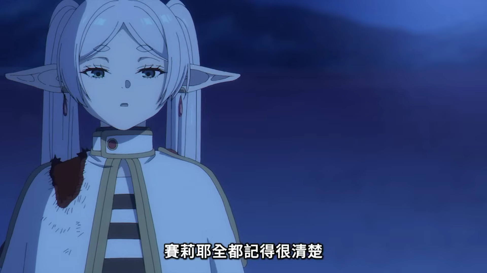

［芙莉蓮劇透警告］

上禮拜我說我對賽莉耶意外的有共鳴，本週的劇情算是印證了我的理解，或說我跟作者對這類角色的想像是很類似的。
大家常說師祖是傲嬌，或者刀子口豆腐心。這當然沒錯，但我覺得如果只單純的把她當成一個傲嬌角色，有點劃錯重點的感覺。圈內的經典例子當屬 EVA 的惣流明日香，雖然常被稱為對後世影響深遠的傲嬌始祖，但是明日香其實是個又強氣又脆弱又憧憬又害怕複雜得要死的角色。而這複雜的心理狀態導致的心口不一的行為，被人們稱為傲嬌。所以明日香是傲嬌角色的代表，但是傲嬌僅是她最表層的標籤。
回到動畫。故事中讓我感到強烈共鳴的片段主要有兩個。
一是 27 集在費倫的面試中，賽莉耶得知費倫看得到她的魔力晃動時，情不自禁露出的笑容。在我看來，那是一種重新燃起希望的振奮。
她說：「芙蘭梅是個失敗的作品，即便她有那麼傑出的才能，卻沒能達到我的境界。我在那之後也收了很多弟子，但幾乎每個都在實力遠不及我時就先離世了。」賽莉耶千年來立於魔法世界的頂點，在漫長的歲月中無數次嘗試培養能夠與自己比肩的後進，但從未成功。如今，她終於再度等到一個值得培育的天才，有機會一掃千年的挫折與寂寞。
我想凡是有把自己放在「師長」的角色上去看待後輩的人，應該或多或少都可以體會這種心情。對身在非義務教育的專業領域的最前沿（比如天文社、學科競賽、奧林匹亞、大學與研究所）的人應該更是明顯。
現代社會的教育體制中，研究生也許最像傳統上意義上「弟子」這個角色的身分之一。因為我們會長時間、高頻率地受一個特定個體指導，並將其視為旅途中理所當然的一部分。而我雖然不是教授，沒有「弟子」，但我的培訓生、學弟妹和天文社的學生們，在不同的方向上也或多或少和弟子的概念有些重疊，所以格外的能夠產生共鳴。
在我看來，賽莉耶確實說話刻薄，也確實對於弟子們的「不成材」感到失望和無奈。從動畫現有的素材推斷，賽莉耶認為戰鬥是魔法的核心價值，所以她覺得才能出眾卻「走歪」的芙蘭梅是個失敗的作品。從現代的普世價值來看這當然不是值得推崇的事，但我想強調，對身在師長的位置、對弟子抱有期待的人來說，這是非常自然且合理的第一感受。
第二個當然就是 28 集賽莉耶說的：「但是不可思議的是，他們明明只是我一時興起培養的弟子，我卻能清楚地回想起每個人的性格跟喜歡的魔法。不知為何我不曾對收弟子感到後悔，即使他們沒有在歷史上留名。」
這段話揭示了賽莉耶在堅守自身核心價值的同時，她也看得見每個徒弟們在戰鬥之外的特質，所以她才能記得每個人的性格跟喜歡的魔法。正如我自己在看待後輩們時，雖然也感嘆大多數人不會走向我最重視的方向，甚至對少數人覺得恨鐵不成鋼，但我依然對他們在我所不看重、不擅長、但認可其價值的領域取得的成果感到高興。
啊不過我還是比較建議平時多積點口德，還有不要遇到才子就亂挖牆腳就是了_(:3」z)_
順帶一提，看完 28 集之後我在 Rex Comic 的解析中看到一個有趣的觀點。千年前的會面中，武鬥派的賽莉耶不喜歡缺乏野心的芙莉蓮。但不清楚是不是作者的刻意設計的反差，千年後賽莉耶建立並管理魔法使協會，而「和平時代的魔法使」芙莉蓮不僅獲得「葬送」之名，也在面對強敵時也會難掩興奮。身為動畫黨的我還不知道漫畫後續的發展，但我很期待未來還能看到對兩者的關係更深入的刻畫。